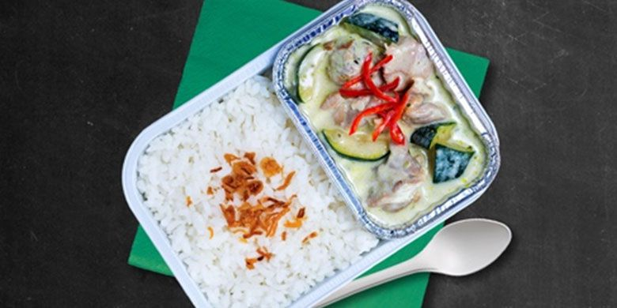

Cicip 5 menu khas Asia Tenggara saat di udara
IWAN SUPRIYATNA
KabarKabur.com - 26/09/2017, 14:00 WIB

-
KabarKabur.com - Traveling semakin banyak dipilih kaum urban untuk melepas penat dan cari pengalaman baru. Terlebih, kini traveling lebih mudah dilakukan karena semakin banyaknya pilihan akses transportasi udara dengan biaya terjangkau. Berkat waktu tempuh yang singkat serta ongkos yang ramah di kantong, perjalanan udara pun sering dipilih kaum urban untuk melancong.
Tak jarang, dalam perjalanan jauh di udara rasa lapar tiba-tiba melanda. Bila tak punya cadangan camilan, pasti Anda bingung harus makan apa. Namun sebenarnya tidak perlu khawatir, sebab pesawat yang Anda pilih pun punya menu-menu makanan favorit sebagai solusi untuk perut yang lapar.
AirAsia contohnya, punya inflight meals bernama Santan. Daftar menu Santan ini terinspirasi dari makanan-makanan khas negara-negara Asean yang lezat dan berbumbu. Mau tahu apa saja daftar makanan ternikmat dari AirAsia pilihan situs Qraved? Berikut pilihannya.
Nasi lemak dikenal sebagai makanan khas Melayu yang banyak ditemui di Malaysia. Di dalam pesawat, AirAsia menyajikan nasi lemak dengan aroma yang wangi, tambahan sambal merah spesial Pak Nasser, dan rendang ayam plus teri goreng kacang, serta telur rebus. Menu ini dijamin bikin Anda susah melupakan kelezatannya, bahkan sampai turun dari pesawat.
Saat bepergian dengan Air Asia jangan lupa cicipi Nasi Kuning Manado yang dilengkapi cakalang asap, telur balado, kering kentang, dan sambal. Rasanya yang gurih dan sedikit pedas bakalan langsung nempel di lidah.
Menu ini tentu sudah begitu populer dan disukai hampir semua orang Indonesia. Biasanya nasi padang disajikan dengan aneka menu pelengkap lain seperti rendang daging sapi, daun singkong, dan ikan bilis balado serta cabe ijo. Yang pasti, menu ini mampu memuaskan perut saat lapar di pesawat. Satu lagi, menu nasi padang AirAsia bakal semakin enak bila ditambahkan kerupuk udang di atasnya.
Masakan khas Thailand memang sudah terkenal ke seluruh penjuru negeri karena punya rasa yang kuat dengan rempahnya. Nah, sekarang saat terbang bersama AirAsia, Anda pun bisa menikmati sajian khas Thailand, yaitu Thai Green Curry. Potongan daging ayam yang disiram dengan pasta kari hijau dan diberi daun jeruk serta kemangi bikin aroma makanan satu ini harum. Apalagi, rasa asam dan gurihnya cocok untuk lidah orang Indonesia.
Untuk Anda yang vegetarian, AirAsia juga punya menu Nasi Goreng dengan isian seperti wortel, kacang polong, hingga jamur. Agar semakin lengkap, nasi goreng ini juga disajikan dengan bermacam-macam sayuran, seperti paprika, jamur, dan juga tofu yang ditumis ala masakan China. Meski judulnya vegetarian, rasa gurih nikmat dari nasi goreng ini juga cocok di lidah Anda yang bisa makan segalanya.